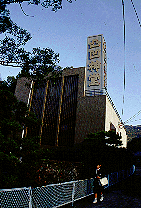
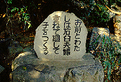
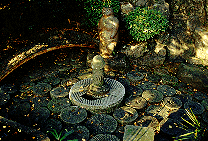
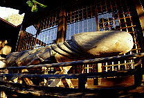
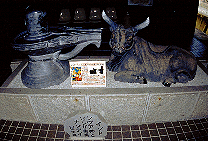
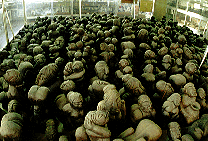

凸凹寺/愛媛県宇和島市
宇和島の凸凹寺は泣く子も黙る超絶の性の資料館である。決して秘宝館ではない。志が違う。
正式には多賀神社と呼ばれる神社と隣の凸凹神堂という資料館によって構成されているのだが通称はなぜか凸凹寺。神道なのか仏教なのかはっきりさせて欲しいところだが、そんな事はここを見終わった頃にはどーでもよくなるので、問題にはすまい。ただこの神社の所信表明ともいえるコメントがチケットの裏に書いてあったので一部抜粋させていただく。
性は宗教なり、哲学なり、性は道徳なり、科学なり、性は生命なり、人生なり。
ハイ、もうバッチリ解りましたね。そーゆートコなんです、ここ。
とゆーわけで私は朝8時少し前、気合いの凸凹寺本日の一番客を目指し、川沿いの道を歩いていた。

凸凹神堂という看板の乗った3階建の建物が見えてくる。思わず写真を撮って周りを見回すと、そこは女子中学生の通学路となっており「おっさん、こんな朝っぱらから何やってんねん」という視線があちこちから飛んできてイタイ。いや、違うんだ、オレはそーゆーんじゃなくて日本の愉快なお寺とかを訪ね歩く風流な人物なのだよ、などと心の中で彼女達に釈明しながら、ほうほうの体で境内に逃げ込んだ。
 
そういえばこの時の所持品は財布とカメラと文庫本のみ。本はズバリ野坂昭如の「エロ事師たち」
・・・違うんだよ〜、オレはそーゆーんじゃないんだよお〜・・・
・・・境内は比較的狭い。展示物の密度に於いては恐らく日本一とうたわれるだけにいささか拍子抜けの感もあるがそれでも本殿脇に鎮座する木製巨大男根やチンポを模した石像、そのものズバリの陽石などすでに凸凹ワールドは始まっている。
 
そしてジャスト8時。モーゼの十戒のごとく凸凹神堂のシャッターが開く。入場料を払い早速館内へ。すると・・・
・・・・・・・・・過密・・・・・・・・・
そのコトバが真先に浮かんだ。過剰なまでの密度を持った展示物。一瞬壁紙の模様かと思ったソレらはみ〜んな性関係のパネル展示だった。しかもそのパネル展示、カラーコピーを多用しており独特の毒々しい風合いを醸し出している。
ここの宮司さん、久保凸凹丸（くぼあいまる）氏という。開祖（求道者として）の久保盛丸氏を父に持ち、己もまたその道の求道者としてエログッズ、もとい性関係コレクター道を歩み、現在、毎日展示換えしても150年かかるという膨大な性関係資料を展示している。
ちなみに館内は無許可撮影禁止。しかも許可を得たとしても撮影料は2万円とのことだったので写真はあんまり撮りませんでした。
1階は主に日本の性信仰に関する資料。石や木で出来た陰陽グッズや金精様、性器付きの土偶、仏像、民芸品などなど。その他いにしえのセックス教団、真言立川流関係の遺品、大正昭和の地下文学雑誌などが隙間なく埋められている。そして宇和島といえば闘牛。展示室の隅にはやっぱり横綱牛のチンチンのホルマリン漬けも。
すでにクラクラ来ながらも2階へ。途中の階段の壁面にも各地のエロ祭りの写真やエロ絵馬などがびっしりと並ぶ。隙間がホントにない。
2階は世界のエロコーナー。まずはチベット、インド、ネパールの歓喜天やらシヴァ神やらのエッチ仏像が延々と並ぶ。とくにネパールの多根祈念木像というのが凄かった。バナナの房のような形態で勿論全部男根。あと二根像も。そこまでして欲しいか、ワンモア・チンコ。これを見たら「いっこ、にこ、サンコンで〜す！」は笑えないぞ。
続いて台湾、韓国などのエロ神を経由し、いよいよヨーロッパのコーナーへ。ここは異様な程SM関係の「資料」が充実している。この辺、凸凹丸氏の趣味が反映された結果なのだろうか・・・
その他ペニスケース、睾丸締具、ガラス製偽茎、100年前のダッチボーイ（革製！）などなど、やっぱヨーロッパはこの辺のマニアックな文化が充実してたんだねえ、って何学習してんだ、俺・・・
もはや身体も心もフラフラ、気力を振り絞って3階へ。途中の階段には両性具有の実物写真などがあるがもはやエロチックな気分すら起こらない、っていうか最初っからそーゆー気分には成り得ない。
これは徹底して博物学的アプローチで資料を展示しているからだ。この辺、かつての衛生博覧会や医学写真集といったエロ本創世時代の反映なのだろうか。
3階にはラストスパートといった感じで春画、浮世絵の類がズラーっと並び最後の部屋には五百性羅漢という
えもいわれぬ芸風の彫像群が詰まっている。

あ、この写真、念写したもんだから2万円よこせ、とか云わないでね。
というわけで驚愕の濃密コレクション見学は終了。お帰りは夫婦和合関係のお守りやキーホルダーなどその手のマニアには堪えられないグッズが揃ってます。帰りがけに土産物を物色しているとお遍路さんがやってきた。あの格好のままこんなとこに来ていいんだろうか、などと学制服で煙草吸ってるガキ見かけちゃったような気分になる。
あ、最後にもうひとつ、すんごいの忘れてた。
富士山碌に住んでいた黒騎進という「仙人」が昭和51年に敢行した「男根唐紙襖破り」の行の展示（本人からの寄贈）。
これは文字通り天井から吊るされた仙人がチンコで襖を破るという荒行で、その時の写真や本人のアレの実物大模型や何故か仙人のホルマリン漬け小指などが展示されていた。凄いのが唐紙襖破りの際に局部を負傷してしまったのだが、その診断書。「陰茎部裂傷 2ヶ月安静治療」だって。痛そ〜！
・・・結果としてコレクションそのものも凄いが、こんな内容の濃いエグいものを集めた凸凹丸氏の生きざまそのものに感動したい。
追記；上記の展示物以外にも陰毛コレクションなどがあるようだが私が訪れた時は展示されてなかった。
これ程のおいしいコレクションを控えに回すほどの層の厚さ、只々呆れるばかりである。
なんせ毎日展示替えしても150年ですから。
凸凹寺は二宮章さんの熱烈な推薦をいただきました
1999.11.
珍寺大道場
HOME